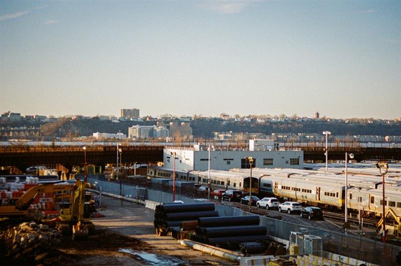

Declan O’Donahue on the changing role of energy system operators
An introduction to GB's national energy system operator and key considerations for future
Britain’s system operation has shifted from the ring-fenced ESO to a publicly owned, operationally independent NESO, retaining real-time electricity operation and adding whole-system planning across electricity and new long-term roles in gas.
The immediate threat is the connections backlog: Waits stretching 5 years and beyond in some cases freeze capital and slow decarbonisation. NESO’s ‘first-ready, first-connected’ gates and culling of ‘zombie’ projects should help, but process friction and developer pain points persist.
A near-term opportunity is flexibility at scale from distributed energy resources like EVs, rooftop solar, and behind-the-meter batteries – if data and settlement catch up. Timely telemetry and probabilistic forecasting are prerequisites.
Without owning assets, and in the absence of a commercial mandate, NESO’s leverage is rules, data and transparency. By 2030, success means faster energisation, fewer curtailment hours, and more flexible load connected on consistent data standards.
A brief history of England and Wales’ system operation
Post-war, England and Wales centralised generation and transmission under the state-owned Central Electricity Generating Board (CEGB). In the 1990s, the CEGB was broken up and privatised: transmission for England and Wales moved to the ‘National Grid’ whilst regional Distribution Network Operators (DNOs) ran the lower-voltage networks in 14 licence areas. National Grid later created a ring-fenced Electricity System Operator (ESO) in April 2019. This body had operational control of the electricity system, but did not own pylons, substations or cables. In October 2024, the public, operationally independent National Energy System Operator (NESO) replaced the ESO and took on whole-system planning across electricity and, increasingly, gas.
Where this fits in the energy transition
Britain has a target of clean power by 2030. Decarbonisation is pushing increased variable renewable development in the north and electrified demand in the south making planning, visibility and rapid connection central to cost and security. At the heart of this lies the energy trilemma: Market makers’ (such as NESO) balancing act is to ensure the grid is reliable, affordable and sustainable. Policy choices – such as retaining a single national wholesale price under the Review of Electricity Market Arrangements (REMA) – frame the levers NESO can deploy.
The major threat – the connection backlog
For the past couple of years developers in Great Britain (GB) have often referred to the grid connection backlog as the main problem facing the grid. Some developers have faced waits into the 2030s to secure a connection. This significantly increases supply chain, technology and ultimately revenue risk and slows the transition. Queues need to be converted into credible energisation dates. To achieve this, NESO has moved to ‘first-ready, first-connected’ approach with gates that prioritise projects with land rights, consents, finance and engineering deliverability. NESO even paused new applications in some cases to clear ‘zombie’ projects and reset processes. However, there are still reports of difficulties with portals and submitting new projects – in the meantime, the wait for solutions, grid connections, and decarbonisation goes on.
The major opportunity: flexibility at scale, if data and settlement support it
Distributed energy resources (DER) include rooftop solar, behind-the-meter batteries, demand response and electric vehicles (EVs). These can provide fast, locationally targeted flexibility to reduce curtailment and delay the need to upgrade networks. To use DER effectively, the operator needs timely telemetry (time-stamped data on flows, voltages etc.) from DNOs and suppliers, along with probabilistic forecasts of supply and demand that include behind-the-meter generation as part of the system.
Settlement design also matters: In Great Britain, wholesale trading and imbalance settlement clear in half-hour ‘settlement periods’. A five-minute price spike can be diluted into the 30-minute price, diluting the reward for assets that respond for only a few minutes. Australia’s National Electricity Market (NEM) settles every five minutes, so fast storage and responsive load are paid better for short-duration actions. That alignment of dispatch and settlement creates stronger incentives for fast flexibility.
Market-wide Half-Hourly Settlement (MHHS) in GB, scheduled to complete market migration by mid-2027, means that retail consumers will more accurately settle based on actual half-hourly smart-meter data – every customer’s bill and every aggregator’s payment will reflect the real half-hour they use or supply power. This precision should help enable bankable flexibility for behind-the-meter batteries, EVs and other DER, whilst helping NESO operate a cleaner system at lower cost.
Different governance archetypes
Network-led planning with a neutral operator
Historically, GB has exhibited features of this model: Asset owners drive investment and delivery whilst the system operator focuses on real-time operations and co-ordination. The upside is clear accountability for delivery, but the downside is slower whole-system optimisation without strong operator levers to make change happen.
Operator-led whole-system planning with delivery by networks
Australia’s National Electricity Market (NEM) leverages this; the Australian Energy Market Operator (AEMO) has robust statutory powers and publishes a long-range, least-cost roadmap – the Integrated System Plan (ISP). This identifies priority transmission corridors, resource mixes and commissioning windows and provides a framework for project delivery. This approach provides a single, transparent development path that investors can underwrite. On the other hand, central road-mapping can still mis-time or mis-size corridors, queue discipline is better but still imperfect and cost inflation risk remains.
Vertical integration – planning, operation and delivery under one umbrella
Several Middle Eastern grids have followed a model involving single-entity planning and delivery to accelerate build-out and concentrate decision making. Saudi Arabia’s National Grid SA sits within a vertically integrated framework. Qatar’s KAHRAMAA is the sole transmission and distribution system owner and operator. China’s State Grid has also shown how central planning can mobilise ultra-high-voltage corridors at pace to connect vast renewable bases. These models trade maximise speed and supply-chain scale. However, they risk overbuild, lock-in and weaker price discovery. Replicability is also somewhat limited in more liberalised markets, as transparency and independent challenge are harder.
Levers NESO can use going forward – without owning assets
Whilst NESO lacks vertical integration, it can leverage statutory powers, transparent data and hard milestones instead. For example, whilst the REMA decision to retain a single national price narrows locational incentives, other options are available: NESO could hard-gate the queue; publish regional capacity maps and indicative dates; or designate competitive ‘zones’ for renewables and for demand sinks such as data centres near constrained generation.
By 2030, success will look like shorter times from application to offer, fewer gigawatt hours curtailed and more flexible load connected under consistent telemetry standards. Immediate priorities may include an improved offering for developers, rigorous ‘first ready’ gates, recommend data sharing standards from DNOs and suppliers, zone design with pre built stability, and aligned planning consents so approvals land before the diggers. Neutrality can coexist with pace if leverage comes from rules rather than ownership.
Quick-fire industry review
What is the best near-term opportunity in the space?
Connections reform that prioritises ‘first-ready’ and clears legacy queues.
What is the single biggest barrier?
Data quality and timeliness across DNOs, suppliers and behind-the-meter assets.
What policy change would help the industry the most?
End-to-end connection code changes with enforceable milestones and firm energisation dates
What is the most overhyped misconception today?
That operators lack commercial acumen; they simply have limited commercial mandate to take on risk. Best-in-class operators steer capital through transparent plans and rules.
Which one metric will you track monthly for the industry?
Time from application to signed connection agreement. Alternatively, it’s interesting to measure the capex of - and timelines for - transmission to be deployed on a monthly basis (and whether they’re remain on budget and on time).
For those interested, where can they learn more?
Electrical engineers’ LinkedIn pages who really know what they’re talking about
Declan O’Donahue is a Director in EY-Parthenon’s Industrials & Energy practice. Declan has over a decade of experience in the energy sector, having started out as a proposal manager for TransGrid in Sydney before developing a range of experiences in environmental markets, sustainable aviation fuel and more recently electricity markets and grid management. For those interested in more on this topic, feel free to reach out to him via his LinkedIn profile.
The views reflected in this article are those of the author and do not necessarily reflect the views of Ernst & Young LLP or other members of the global EY organisation.